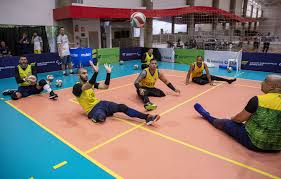
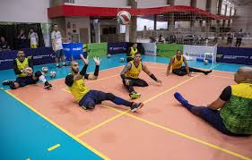
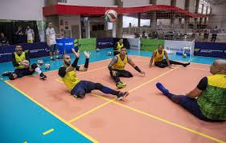

Menu Carrossel


 

O vôlei sentado é uma modalidade adaptada do voleibol convencional, criada para atletas com deficiências físicas. Este esporte é reconhecido pela sua competitividade, trabalho em equipe e capacidade inclusiva.

Este site foi desenvolvido para divulgar o vôlei sentado, promovendo maior conhecimento sobre suas regras, características e importância como modalidade esportiva inclusiva.